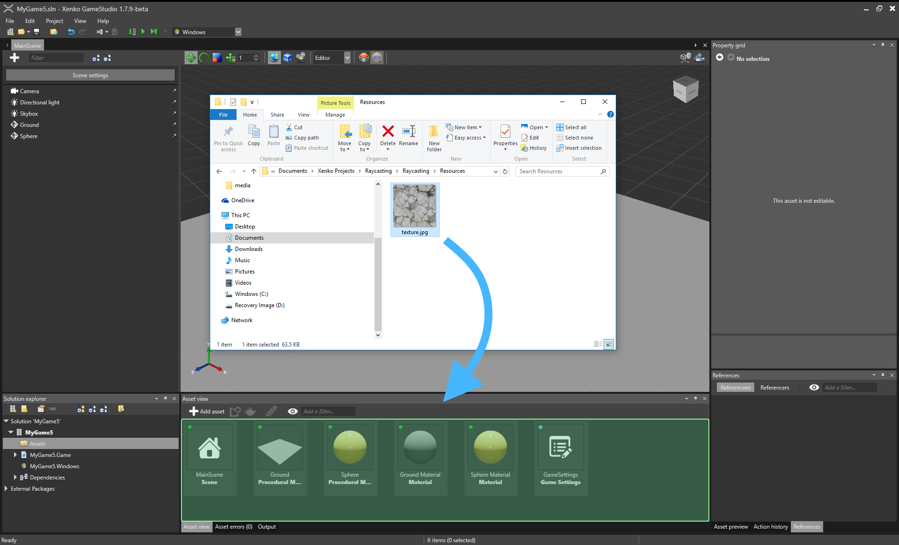
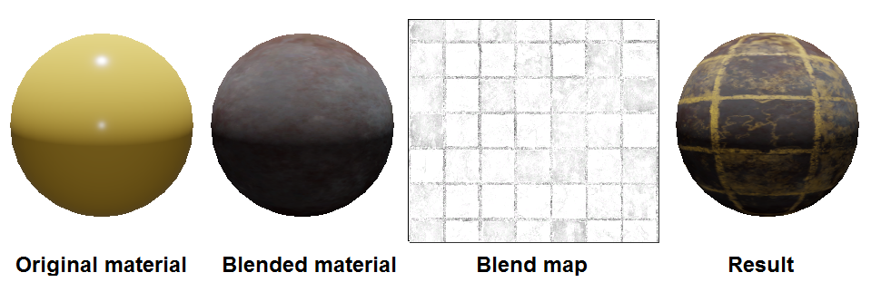

テクスチャー
初級 アーティスト プログラマー
テクスチャー（Textures） とは、主にマテリアルで使用される画像のことです。Strideは、マテリアルを覆う表面にテクスチャーをマッピングします。
テクスチャーは、マテリアルに色情報を追加することができます。 例えば、壁にレンガの模様を追加したり、テーブルに木の模様を追加したりすることができます。 テクスチャーのピクセル（texels；テクセル）の値は、鏡面反射マップ、メタルネスマップ、法線マップなど、他の計算にも使用できます。
マテリアルには通常、複数のテクスチャーが含まれています。例えば、マテリアルには、色テクスチャー、法線マップテクスチャー、ラフネステクスチャーが含まれている場合があります。
テクスチャーは、マテリアル以外でも使用することができます。 例えば、UI に直接描画したり、スプライトで使ったりすることができます。
サポートされるファイル形式
テクスチャーとして使用できるファイル形式は以下の通りです。
.dds.jpg.jpeg.png.gif.bmp.tga.psd.tif.tiff
Note
- Stride は、アニメーション GIF や PNG などのアニメーション画像ファイルの場合、最初のフレームのみ読み込みます。Stride ではアニメーションは行われず、静止画像として表示されます。
- 今のところ、Stride は動画ファイルには対応していません。
テクスチャーを追加する
アセットビューで、[Add asset] > [Texture] をクリックし、テクスチャーのテンプレート（Color, Grayscale, Normal map のいずれか）を選択します。

Note
レンダーターゲットはまた別の種類のテクスチャーであり、画像は使用しません。代わりに、カメラからの出力をレンダリングします。詳しくは、レンダー ターゲットをご覧ください。
または、エクスプローラーからアセットビューにテクスチャーファイルをドラッグします。

次に、テクスチャーのテンプレート（Color, Grayscale, Normal map のいずれか）を選択します。
Game Studio は、アセットビューにテクスチャーを追加します。

テクスチャーのプロパティ
以下のプロパティは、すべてのテクスチャーで共通です。

| プロパティ | 説明 |
|---|---|
| Width | ゲーム内でのテクスチャの幅 |
| Height | ゲーム内でのテクスチャの高さ |
| Use percentages | これを有効にすると、Width と Height を、実際のピクセルサイズに対する幅と高さの割合（パーセンテージ）と見なします。 |
| Type | 画像として表示したいテクスチャーでは Color を、法線マップでは Normal map を、その他のもの（鏡面反射マップ、メタルネスマップ、ラフネスマップなど）では Grayscale を設定します。色テクスチャーと法線マップには追加のプロパティがあります（以下参照）。 |
| Generate mipmaps | これを有効にすると、テクスチャーの異なるバージョンを異なる解像度で生成し、距離に応じて選択して表示します。ストリーミングを使用すると、パフォーマンスが向上し、視覚的なアーティファクトが除去され、ポップインが減少しますが、より多くのメモリを使用します。カメラから常に同じ距離にあるテクスチャー（UI など）には不要です。 |
| Compress | 最終的なテクスチャーを、ターゲットプラットフォームや用途に応じたフォーマットに圧縮します。詳細については、テクスチャーの圧縮を参照してください。 |
| Stream | 実行時に、テクスチャーを動的にストリーミングします。これにより、パフォーマンスとシーンのロード時間が改善します。スプラッシュ画面など、常にロードしておきたい重要なテクスチャーにはお勧めできません。詳細については、ストリーミングを参照してください。 |
色テクスチャーのプロパティ
以下のプロパティは、テクスチャーの Type を Color に設定した場合に適用されます。

| プロパティ | 説明 |
|---|---|
| sRGB sampling | テクスチャーを sRGB 形式で保存し、サンプリング時にリニア空間に変換します。明示的にリニア空間にしておく必要がない限り、すべての色テクスチャーに推奨されます。 |
| Color key enabled | 実行時に、Color key color プロパティに設定された色を透明色として使用します。これを無効にした場合、プロジェクトは代わりにテクスチャーの透明領域を使用します。 |
| Color key color | 実行時に透過処理に使用される色です。Color key enabled が選択されている場合のみ適用されます。 |
| Alpha | テクスチャーのアルファフォーマットです（None, Mask, Explicit, Interpolated, Auto のいずれか）。 |
| Premultiply alpha | 事前に、画像のすべての色成分にアルファ成分を乗じます。 |
法線マップのプロパティ
以下のプロパティは、テクスチャーの Type を Normal Map に設定した場合に適用されます。

| プロパティ | 説明 |
|---|---|
| Invert Y | 正のY成分（緑）が接線空間で上を向いていると見なします。これは、法線マップを作成するために使用するツールによって異なります。 |
法線マップの詳細については、法線マップを参照してください。
グレースケールテクスチャー
グレースケールテクスチャーは、画像の R チャンネルのみを使用します（最終のRGBA = オリジナルの RRRR）。
Note
（スプライトコンポーネントとして）シーンにテクスチャーを追加し、テクスチャータイプをグレースケールに設定した場合、モノクロではなく赤色に見えます。これは、画像がR（赤）チャンネルを使用しているためです。
チャンネルをモノクロにするには、スプライトコンポーネントのプロパティで、Type を Grayscale に設定します。スプライトコンポーネントのプロパティについては、スプライトの使用を参照してください。
グレースケールのテクスチャーを使って、マテリアルマップに値を与えることができます。例えば、テクスチャーを ブレンドマップ として使用し、2 つのマテリアルレイヤーを合成することができます。


ブレンドマップのテクスチャーが、合成結果のパターンとどのように対応しているかに注目してください。
詳細については、マテリアルマップを参照してください。
グローバル テクスチャー設定
グローバルなテクスチャー設定にアクセスする方法については、ゲームの設定を参照してください。

| プロパティ | 説明 |
|---|---|
| Texture quality | テクスチャーをエンコードする際のテクスチャーの品質を指定します。Fast は CPU 使用率が最も低いですが、品質も最低です。ターゲットプラットフォームによっては、設定を高くするとビルドが遅くなることがあります。 |